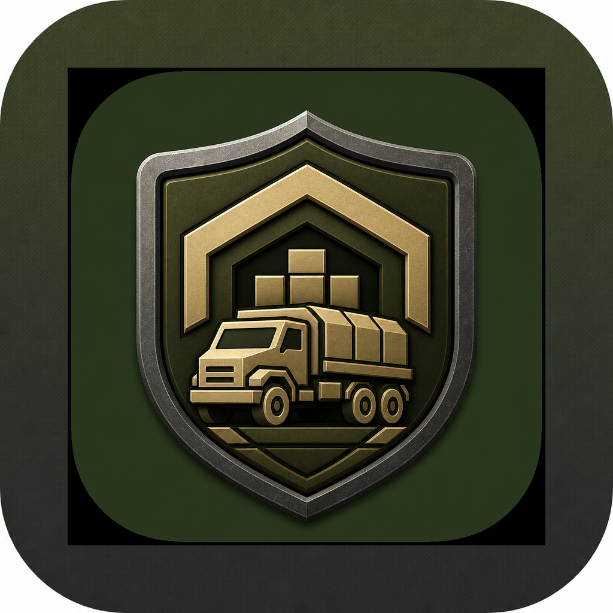
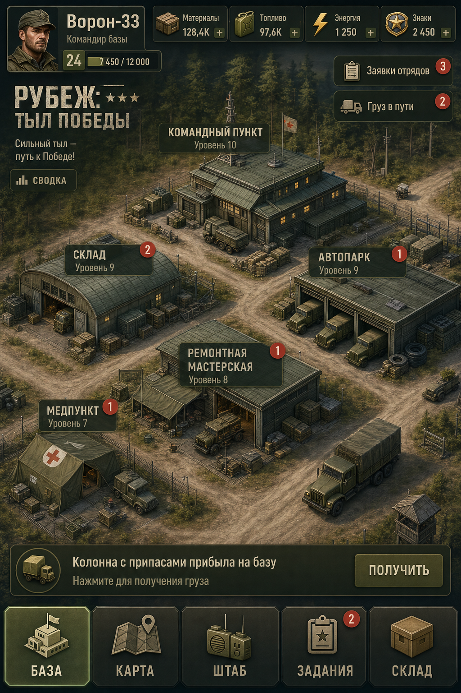
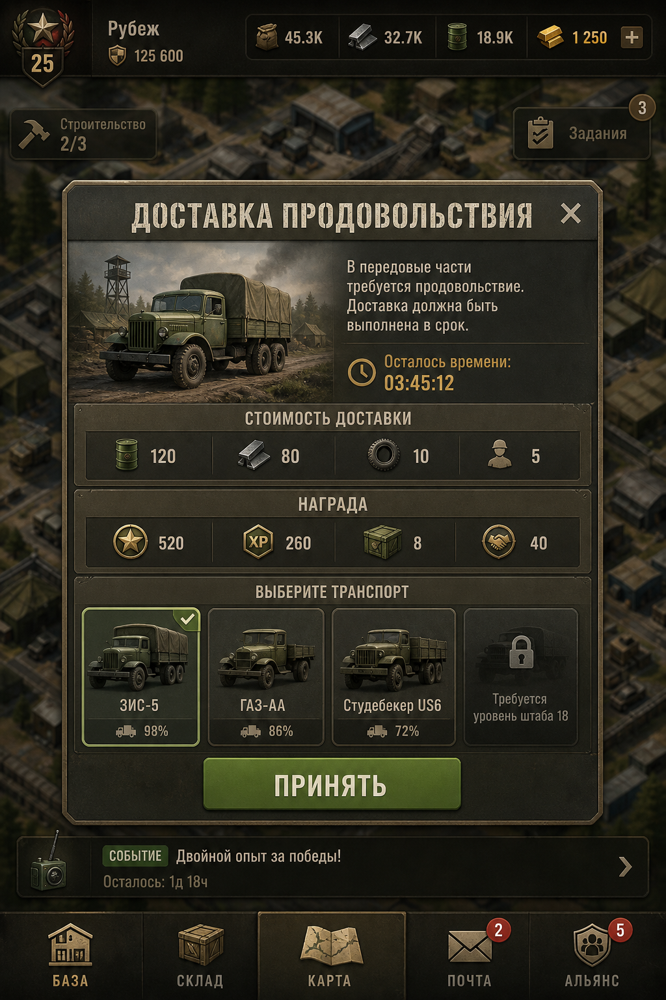
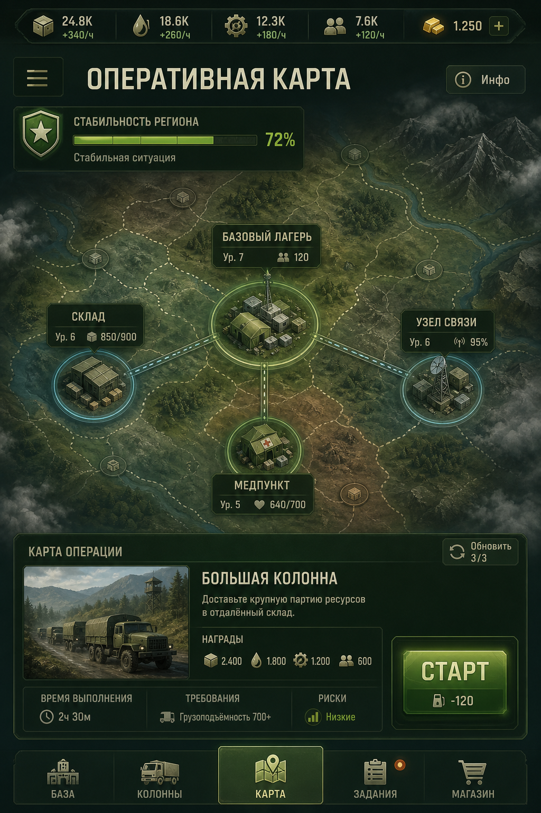
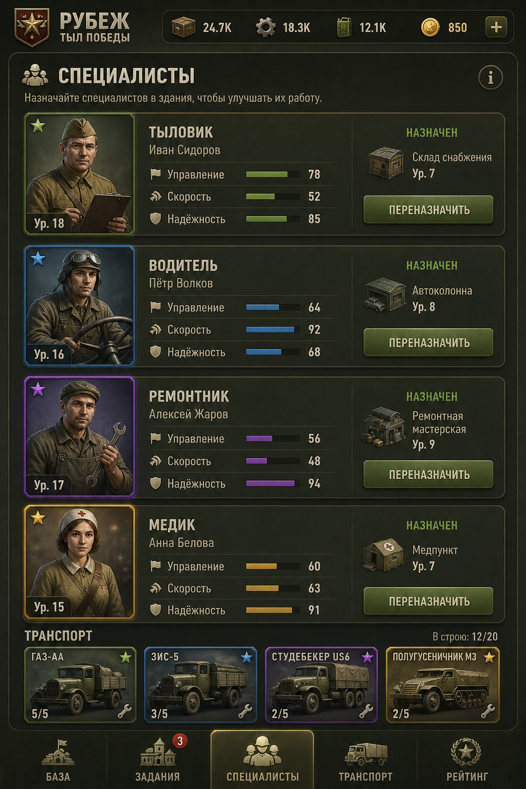
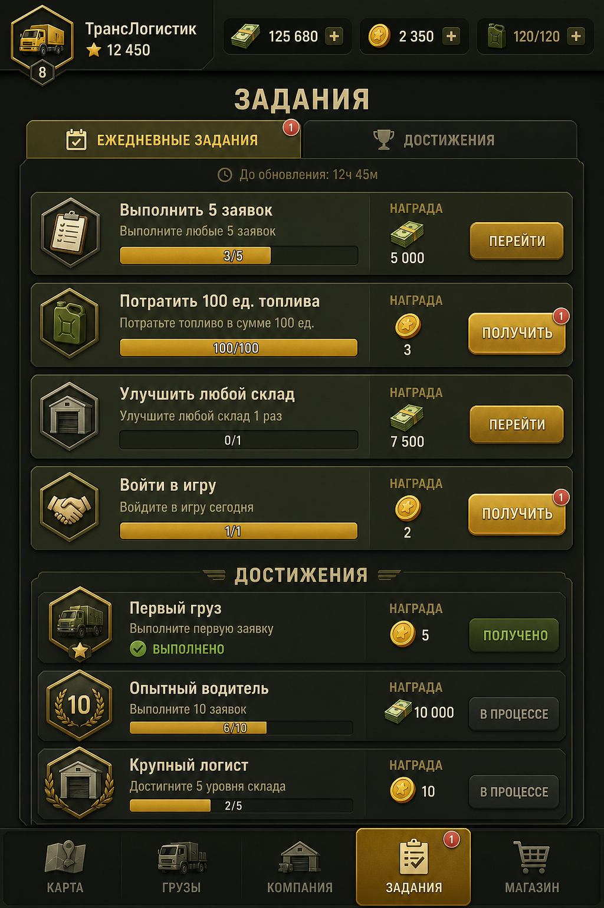
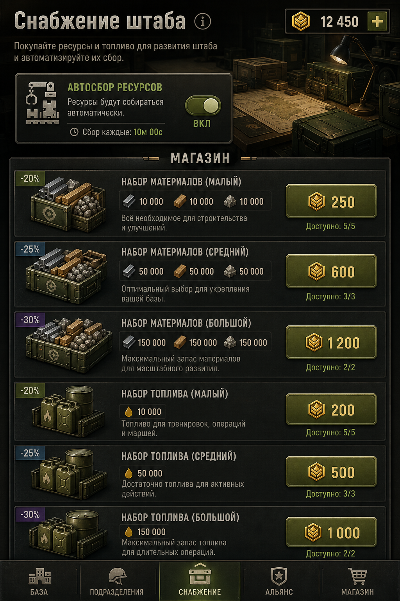
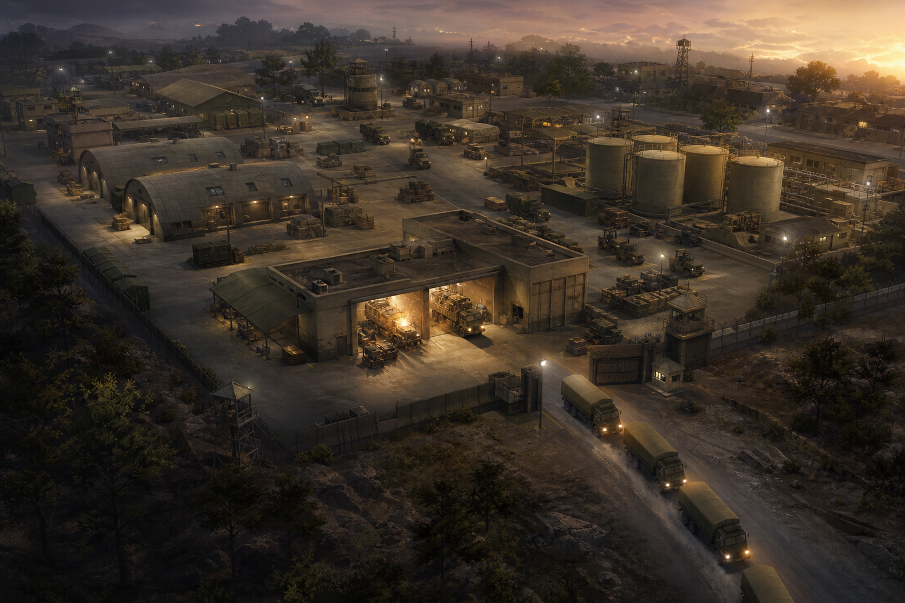
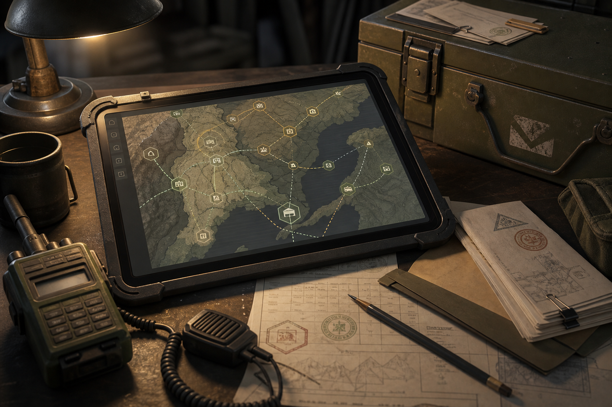

Короткий цикл
15–60 секунд: новая заявка, назначение исполнителя, производство или доставка, ресурсы и репутация.

Рубеж APKIdle-стратегия · менеджер базы · Android
Вы — командир тылового узла. Строите склады, ремонтные боксы, автопарк и узел связи, выполняете заявки подразделений и превращаете полевой пункт в автоматизированный комплекс снабжения. Играйте вместе: объединения, помощь союзникам, чат и гонка логистики.
Художественный продукт 16+. Без жестокости, реальных координат, частей и позывных.
«Рубеж: Тыл Победы» — не шутер и не симулятор боя. Это idle-стратегия про организацию тыла: снабжение, ремонт техники, доставку топлива и продовольствия, связь, медицину и инженерное обеспечение.
Боевые события показаны абстрактно: на оперативной карте двигаются условные линии и показатели устойчивости района. Главная ценность игрока — сколько заявок закрыто вовремя, сколько техники возвращено в строй и насколько бесперебойно работает система.

Так выглядит текущая Android-сборка: база, заявки, карта операций, специалисты, задания и склад.





Основа понятна за первую минуту. Дальше открываются здания, специалисты, операции и автоматизация.
15–60 секунд: новая заявка, назначение исполнителя, производство или доставка, ресурсы и репутация.
3–10 минут: сбор ресурсов, апгрейды, очереди, срочная операция, контейнер наград, проверка задач.
Офлайн-доход, ежедневные задания, сюжетные главы, рост устойчивости района и переход к новому рубежу.

Палатка становится модульным пунктом, грунтовая площадка — укреплённым парком, одиночная антенна — защищённым узлом связи. Десять объектов: командный пункт, склад, автопарк, ремонт, топливо, продовольствие, медицина, связь, инженерия и учебный центр.
Всё, что уже есть в текущей сборке на сервере.
Доставка продовольствия и топлива, срочный ремонт, эвакуация техники, восстановление связи, инженерные работы, помощь гражданской инфраструктуре.
Материалы, топливо, запчасти, продовольствие, медкомплекты, энергия базы и премиальные «Знаки отличия».
Тыловики, водители, ремонтники, медики, связисты, инженеры. Грузовики, заправщики, санитарный транспорт, РЭМ и мобильные узлы связи.
Большая колонна, сломанный маршрут, резервная связь, ночной кризис, инженерный рубеж. Успех считает сервер по подготовке базы.
База работает без вас до 4 часов. Позже открываются автосбор ресурсов и автозапуск простых заявок.
Ежедневные цели, достижения вроде «Первый груз» и «Надёжный тыл», магазин понятных пакетов без случайных контейнеров.
Создавайте союз до 30 игроков, пишите в чат, ускоряйте строительство союзникам, выполняйте недельный план и соревнуйтесь в логистической гонке дня.

«Без моего штаба, складов, ремонтников и водителей вся система остановится.»
Да, прогресс хранится на сервере. Офлайн-доход начисляется при следующем входе.
Нет. Районы, персонажи и маршруты вымышленные. Нет демонстрации жестокости.
Вкладка «Карта» → сервер http://135.106.173.99/api
Один раз установите сборку 0.2+. Дальше игра сама предложит обновление и скачает APK — останется только подтвердить установку в Android.
Android APK. Вертикальный экран, установка из файла.
Актуальная Android-сборка с базой, заявками, картой, специалистами, заданиями, магазином и серверным сохранением.
Скачать APK сейчас com.rubezh.tylpobedy · v0.3.1 · карта на базе
Android может попросить разрешить установку из неизвестных источников.
После запуска откройте «Карта» и укажите:
http://135.106.173.99/api